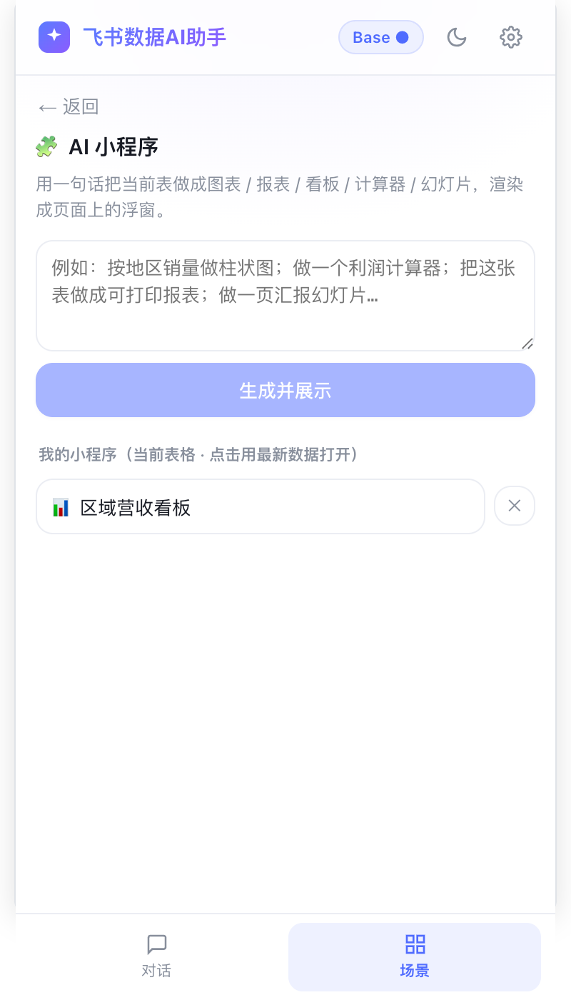
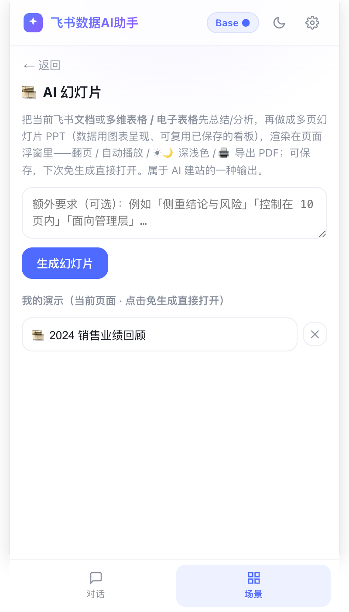
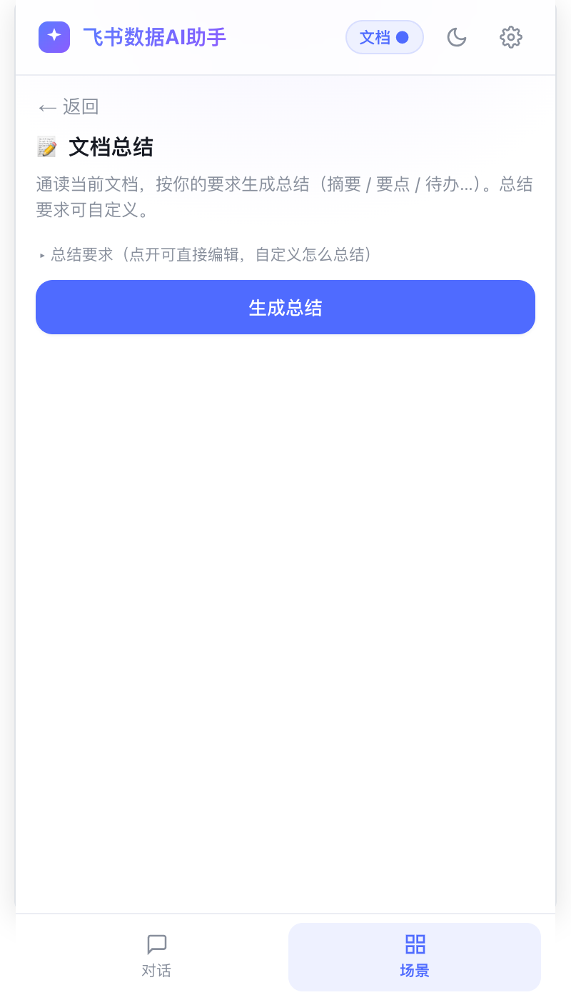
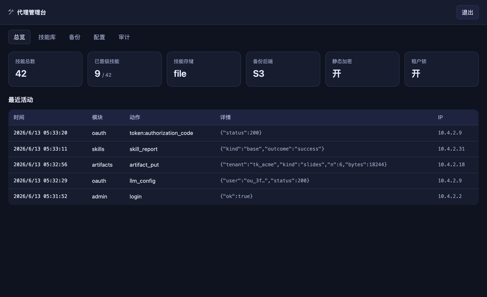
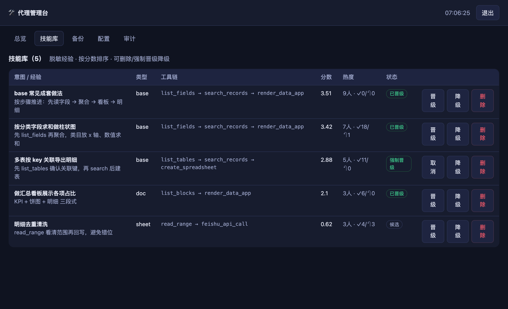
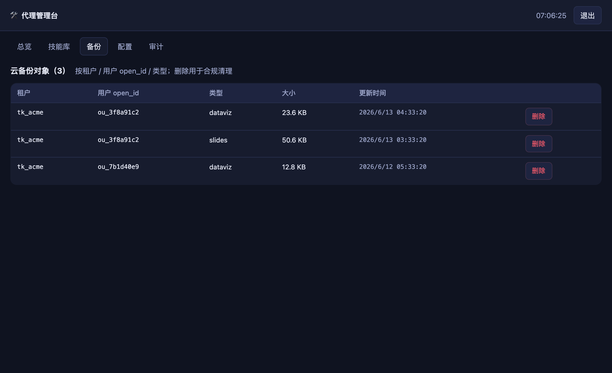

概览
Chrome MV3 扩展：在飞书 多维表格 / 电子表格 / 文档 页用自然语言操作，并把数据做成 看板 / 网站 / PPT，还能做文档质检。无后端也能用，全部以用户本人飞书身份操作。
React 18 + TS + Vite + ECharts。装上即用；个人版零服务端。
一个零依赖 Node 进程，挂载 换token代理 + 技能库 + 云备份 + 管理台。全部开关门控，不影响商店版。
能力一览
| 能力 | 说明 | 需要服务端？ |
|---|---|---|
| 自然语言操作多维表格/电子表格/文档 | 读、写、批量改、行级写回、建表/字段，全程用户身份 + 危险操作确认门 | 否 |
| 看板 / AI建站 / PPT / 文档质检 | 把数据做成 ECharts 看板、自包含网站、可翻页 PPT；通读文档挑质量问题 | 否 |
| 越用越聪明（本地经验） | 成功套路在本机沉淀，下次自动参考 | 否 |
| 企业统一下发 App ID / App Secret / LLM / 策略 | 密钥只在服务端，员工免配置；单一构建只内置代理地址 | 是（代理） |
| 共享技能库 | 多用户脱敏经验汇聚、去重、打分、晋级、主动推送 | 是（代理 + 可选 embedding） |
| 企业云备份 | 小程序/建站/PPT 镜像到企业自有对象存储，丢失可拉回 | 是（代理 + 对象存储） |
| 本地配置备份 | 导出/导入文件防个人数据丢失（所有版本可用） | 否 |
| 运维管理台 | 看板/技能审核/备份管理/配置巡检/审计 | 是（代理） |
使用
安装与上手
下面的命令是自行构建才需要（想把 App ID 打进包、二次开发或私有化）：
1) git clone && npm i
2) npm run build # 产物在 dist/
3) chrome://extensions → 打开「开发者模式」→「加载已解压的扩展程序」→ 选 dist/
4) 打开任意飞书多维表格/电子表格/文档页，点扩展图标开侧边栏
5) 设置 → 填 OpenAI 兼容大模型（Base URL/Key/Model）+ 用飞书账号一键授权能做什么（侧边栏对话即可）
- 操作数据：「把 A 列按月汇总」「筛掉重复行」「给这几行建任务」——批量改一次性提交、删除走确认门、可一键撤销。
- 看板/小程序：「按分类做个销售额柱状图」→ 浮窗渲染，可导出 PDF / 生成飞书文档 / 推送到群。
- AI 建站：把当前表做成一个自包含网站。
- AI 幻灯片：文档/数据一键转可翻页 PPT。
- 文档质检：通读整篇，挑出逻辑断点、未定义术语、前后矛盾、遗留 TODO、空小节等。
- 网页剪藏：把当前网页内容剪藏进多维表格。






🧰 一键打包向导（图形化 · 给小白）
不想碰命令行 / .env？跑一条命令打开网页向导，选模式 → 改名称 / 换图标 → 填参数 → 一键打包下载，全程不用敲配置：
npm run package:ui # 打开 http://localhost:8799（仅本机）
- 4 种模式：企业·代理（推荐）/ 个人·直连 / 商店·BYO / 私有化·内网——选哪个就只显示哪些字段，不会填错。
- 品牌定制：改扩展名称、描述；上传一张方形 PNG，自动缩成 16/32/48/128 写进
manifest（不动源文件）。 - 连接 / 能力：代理地址、App ID / 大模型是否从代理下发、统一策略、共享技能库、企业云备份，勾选即配。
- 高级：大模型域名白名单、外发脱敏、无远程代码、单次外发上限、OAuth scope、IP CIDR、剥 manifest key。
- 安全：表单只落到本机
.env.package.local（已 gitignore）；打包前临时挪开你的.env.local保证产物“只含这次填的”；构建结束自动还原。商店模式强制不内置任何凭据并剥 key。
打完点「下载」拿到 .zip 解压，chrome://extensions → 开发者模式 →「加载已解压」即可；也可直接加载项目里的 dist/。底层就是驱动 npm run build -- --mode <模式> + 后处理 manifest/图标，和手动构建产物一致。
部署 · 个人 / 直连
三种鉴权模式，按安全性从高到低：
| 模式 | 构建配置 | secret 去向 |
|---|---|---|
| A. 纯 user-token（推荐） | 什么都不内置 | 无 secret；用户授权拿自己的 token |
| B. 直连·密码加密 | VITE_FEISHU_APP_ID + VITE_FEISHU_APP_SECRET_ENC（密文） | 密文进包，运行时输口令解锁 |
| C. 代理模式（企业） | VITE_OAUTH_PROXY_URL，三个 secret 变量全部留空 | secret 只在服务端，永不进 .crx |
# B. 生成加密 secret（按提示输入 secret + 口令）
node scripts/encrypt-secret.mjs
# 填 .env.local：VITE_FEISHU_APP_ID=cli_xxx VITE_FEISHU_APP_SECRET_ENC=<密文> VITE_FEISHU_APP_SECRET=（留空）
npm run build部署 · 企业服务端套件
一个零依赖 Node 进程（node ≥ 18）就是整套服务端：docs/oauth-proxy-server.mjs 在同一端口、同一进程里挂载换 token、技能库、云备份、管理台。前面套一层 nginx 即可。
VITE_OAUTH_PROXY_URL）。App ID / App Secret / LLM Key / 策略 全部服务端下发，可随时轮换，单一构建服务任意租户。① 起代理
FEISHU_APP_ID=cli_xxx FEISHU_APP_SECRET=xxx \
ALLOW_ORIGIN=chrome-extension://<你的扩展ID> \
ALLOWED_REDIRECT_URIS=https://<扩展ID>.chromiumapp.org/ \
FEISHU_TENANT_KEY=<你企业的 tenant_key> \
node docs/oauth-proxy-server.mjs # 默认 :8787子服务按需打开（同进程挂载，无需另起）：
# 企业统一 LLM（员工免填 key）
LLM_BASE_URL=https://api.deepseek.com LLM_API_KEY=sk-xxx LLM_MODEL=deepseek-chat \
# 共享技能库（建议配真 embedding）
EMBED_URL=https://api.openai.com/v1/embeddings EMBED_KEY=sk-xxx EMBED_MODEL=text-embedding-3-small \
SKILLS_FILE=/var/lib/feishu/skills.json \
# 企业云备份（对象存储 S3 兼容；或本地盘 ARTIFACTS_DIR）
S3_ENDPOINT=https://s3.ap-southeast-1.amazonaws.com S3_REGION=ap-southeast-1 \
S3_BUCKET=my-feishu-artifacts S3_ACCESS_KEY=AKIA... S3_SECRET_KEY=... \
ARTIFACT_ENC_KEY=<32字节hex> \
# 运维管理台（设了密码才挂载 /admin）
ADMIN_PASSWORD=<高熵密码> ADMIN_TOKEN_SECRET=<32字节随机> \
node docs/oauth-proxy-server.mjs② 构建企业包
# .env.enterprise.local（只填代理地址 + 想开的特性开关）
VITE_OAUTH_PROXY_URL=https://your-proxy.example.com/feishu/oauth
VITE_OAUTH_PROXY_KEY=<可选·与代理 PROXY_SHARED_KEY 一致>
VITE_APP_ID_FROM_PROXY=1 # App ID 从代理下发
VITE_LLM_FROM_PROXY=1 # LLM 从代理下发
VITE_ENTERPRISE_POLICY=1 # 统一策略
VITE_SKILLS_ENABLED=1 # 共享技能库
VITE_ARTIFACT_SYNC=1 # 企业云备份
# 三个 secret 变量全部留空！
npm run build -- --mode enterprise
# 自检：包里有代理 URL、【无】secretVITE_* 特性都是「标志 && 有代理」双门控。商店/BYO 版没有代理 → 全部折叠为死代码消除，对外发版完全不受影响。③ nginx（推荐内网 + 身份网关）
location /feishu/oauth { proxy_pass http://127.0.0.1:8787/; proxy_set_header X-Forwarded-For $remote_addr; }
# 管理台建议仅内网/VPN 可达 + IP_ALLOWLIST，或单独 location 前置 SSOTRUST_PROXY=1，上游反代必须覆盖 X-Forwarded-For（如上 $remote_addr），绝不能追加，否则客户端可伪造 XFF 绕过限流甚至命中 IP 白名单。部署 · 商店 / BYO 包
对外上架版：用户自带飞书应用（填 App ID + Secret），不内置任何凭据，剥掉 manifest key。
npm run build -- --mode store # VITE_WEBSTORE=1：剥 key + 商店名/描述；不内置 secret
# 校验：dist 里无 appid、无 secret、无任何企业端点串（技能/备份/app_config 全 0）.env 模式区分；企业特性在无代理时被死代码消除，本地配置备份等无服务端依赖的能力照常可用。部署 · 私有化 / 内网（Lark / 飞书私有化）
私有化只差一个域名后缀，所有 host 从它派生：
VITE_FEISHU_BASE_DOMAIN=your-private-domain.com # open.<域> / accounts.<域> / <租户>.<域> 自动派生
# 代理侧：FEISHU_API_BASE=https://open.<域>/open-apis详见 docs/PRIVATE_DEPLOYMENT.md。feishuFetch 会在私有化端点 404 时自动 /vN/→v(N-1) 回退。
环境变量速查
客户端（构建期 VITE_*，写在 .env.<mode>.local）
| 变量 | 作用 |
|---|---|
VITE_FEISHU_APP_ID | 内置 App ID（企业托管模式留空，改由代理下发） |
VITE_FEISHU_APP_SECRET / _ENC | 明文 / 密文 secret（代理模式留空） |
VITE_OAUTH_PROXY_URL | 企业代理地址（开启所有企业特性的前提） |
VITE_OAUTH_PROXY_KEY | 可选·防滥用键（随包下发，弱，非强密钥） |
VITE_APP_ID_FROM_PROXY | =1 从代理 app_config 取 App ID |
VITE_LLM_FROM_PROXY / _LOCK_MANAGED / _NO_PERSIST | 企业统一 LLM / 锁定手动 / 仅内存 |
VITE_ENTERPRISE_POLICY | =1 拉取并锁定企业统一策略 |
VITE_SKILLS_ENABLED | =1 共享技能库 |
VITE_ARTIFACT_SYNC | =1 企业云备份 |
VITE_LLM_REDACT / _MAX_PAYLOAD_CHARS | 外发 LLM 前脱敏 / 单载荷上限 |
VITE_WEBSTORE / VITE_NO_REMOTE_CODE | 商店打包(剥 key) / 无远程代码(声明式渲染) |
VITE_FEISHU_BASE_DOMAIN | 私有化域名后缀 |
服务端（运行期，进程环境变量）
| 变量 | 子服务 | 作用 |
|---|---|---|
FEISHU_APP_ID / FEISHU_APP_SECRET | oauth | 换 token 用；secret 永不下发。App ID 也经 app_config 公开下发 |
ALLOW_ORIGIN / ALLOWED_REDIRECT_URIS / ALLOWED_CLIENT_IDS | oauth | 来源锁 / 回调白名单(fail-closed) / client_id 白名单 |
PROXY_SHARED_KEY / IP_ALLOWLIST / TRUST_PROXY / RATE_LIMIT_PER_MIN | 全局 | 防滥用键 / IP 白名单(已覆盖管理台) / 信任 XFF / 限流 |
FEISHU_TENANT_KEY | llm/policy/备份 | 租户锁（必填，fail-closed）：只放行本企业成员 |
LLM_BASE_URL / LLM_API_KEY / LLM_MODEL / LLM_LIMIT_PER_HOUR | oauth | 企业统一 LLM 下发 + 每用户配额 |
POLICY_AUTO_CONFIRM / POLICY_LEARN / POLICY_NOTICE | oauth | 统一策略（强制并锁定客户端开关） |
EMBED_URL / EMBED_KEY / EMBED_MODEL | skills | OpenAI 兼容 embedding（不配则内存假向量） |
SKILLS_FILE / SIM_MERGE / TOOL_MERGE / MIN_SOURCES / MIN_SUCCESS_RATE / PLAYBOOK_MIN / SKILLS_MAX / TENANT_KEYS | skills | 落盘 / 去重阈值 / 晋级阈值 / 套路阈值 / 条数上限 / 多租户 |
S3_ENDPOINT / S3_REGION / S3_BUCKET / S3_ACCESS_KEY / S3_SECRET_KEY / S3_PREFIX | artifacts | S3 兼容对象存储（AWS/OSS/COS/R2/MinIO） |
ARTIFACTS_DIR / ARTIFACT_ENC_KEY / MAX_ARTIFACT_BYTES / PUT_LIMIT_PER_HOUR | artifacts | 本地盘后端 / 静态 AES 加密 / 单次上限 / 每用户配额 |
ADMIN_PASSWORD / ADMIN_TOKEN_SECRET / ADMIN_SESSION_TTL_MIN / ADMIN_LOGIN_LIMIT_PER_MIN | admin | 登录密码（设了才挂载）/ 会话签名密钥（与密码解耦）/ 会话时长 / 登录限流 |
SKILLS_DISABLED / ARTIFACTS_DISABLED | — | =1 关闭对应子服务 |
架构
① 你说一句话，数据怎么流（个人版·无后端）
② 企业服务端套件 —— 一个 Node 进程
关键约束（代码里硬编码的边界）
- 只用用户身份：
auth.ts resolveToken绝不回退 tenant。 - 文件级删除一律拒绝；内容删除走确认门（
DESTRUCTIVE_TOOLS）。 - 通用 API 白名单：禁 im/通讯录/权限/所有权。
- 出站只走
feishuReq/feishuFetch；大模型走assertSafeBaseUrl。 - 沙箱隔离：生成代码在 opaque origin +
connect-src:'none'。 - secret 不进明文包；写操作不自动重试。
- 企业特性双门控：
HAS_* = flag && 有代理→ 商店版死代码消除。
深结构见 docs/ARCHITECTURE.md。
安全模型
换 token 的安全流程（代理模式：secret 永不进扩展包）
出去了什么 · 信任边界
客户端
- 身份闸门：AI 始终以用户本人飞书身份操作，绝不回退应用/租户身份越权。
- 破坏性操作：文件级删除硬阻断；内容删除/通用写入走确认门（可一键撤销）。
- 出站守卫：飞书只走
feishuReq/feishuFetch；大模型 Base URL 经assertSafeBaseUrl+ 可选 host 白名单。 - 沙箱：LLM 生成的渲染代码在 opaque origin、
connect-src:'none'、无allow-same-origin。 - 商店版隔离：无代理 → 企业特性全部死代码消除，不外发任何东西。
服务端
- secret 不下发：App Secret / LLM Key / 对象存储密钥只在服务端；token 透传不解析不落盘不打印。
- 租户锁 fail-closed：
FEISHU_TENANT_KEY未设则拒绝下发一切；回调白名单未设则拒绝换 code。 - App ID 经
app_config无 token 下发：App ID 本就是公开值（OAuth URL 里可见），格式校验后缓存，secret 仍只在服务端。 - 技能库只收脱敏数据：仅 LLM 蒸馏的一句话经验 + 工具名 + 匿名安装 id；客户端无条件 PII 脱敏，且 match 查询用去标识经验、绝不发原始任务文本。
- 云备份按 open_id 隔离：存储路径由服务端校验出的 open_id 生成、客户端不可指定；可选静态 AES。
管理台
- 设了
ADMIN_PASSWORD才挂载；登录换 HMAC 签名会话（密钥与登录密码解耦，重启即吊销）。 - 纳入 IP 白名单（在所有子服务分发之前把关）；建议仅内网/VPN 可达。
- 防点击劫持（
X-Frame-Options: DENY+ CSPframe-ancestors none）；同源校验；登录限流。
docs/SECURITY_AUDIT.md。本仓库经过两轮代码审查 + 一轮安全审查，所有中危及以上风险已整改。运维 · 管理台
设 ADMIN_PASSWORD 启动代理后，浏览器开 https://<你的代理>/admin 登录，统一管理技能库 / 云备份 / 配置 / 审计。
登录与防护（怎么进、怎么守）
/admin；会话签名密钥与登录密码解耦（独立 ADMIN_TOKEN_SECRET 或启动随机 → 重启即吊销）。/admin 已纳入 IP 白名单，务必仅内网/VPN 可达。| 页签 | 能做什么 |
|---|---|
| 总览 | 各模块健康、技能数/已晋级、备份后端、最近活动 |
| 技能库 | 浏览脱敏技能、分数/热度、删除、强制晋级/降级 |
| 备份 | 按 租户/用户 open_id/类型 列出对象、删除（合规清理） |
| 配置 | 当前生效配置（密钥已脱敏） |
| 审计 | 近 500 条事件（换 token / app_config / llm_config / 技能 / 备份 / 管理操作） |
实际界面



ADMIN_PASSWORD，并设独立的 ADMIN_TOKEN_SECRET。验证 · 测试
每次改完都跑（迭代循环）：
npm run typecheck # 必须 0 错
npm test # 单元测试全绿（~460 用例）
npm run build # 必须成功
npm run test:ui # 动了侧边栏 UI 再跑（11 项冒烟）服务端 + 客户端能力用合成数据一键复验（无需真飞书 / 真对象存储）：
npm run validate:server # 起假飞书 + spawn 真代理，跑 29 条端到端断言
#（技能去重/打分/晋级/匹配/套路、备份往返/隔离/AES、各 grant、管理台审核/审计）
# 看板/PPT/质检 的纯逻辑由 src/shared/features-validate.test.ts 用合成销售数据校验（含手算期望）FAQ
不用。个人版零服务端，用「飞书账号授权」即可。服务端只为企业统一下发凭据/技能库/云备份/管理台。
不会。企业特性双门控，无代理时被 Vite 死代码消除；构建后 dist 里技能/备份/
app_config 端点串全为 0、无 appid。只外发 LLM 蒸馏的一句话经验 + 工具名 + 匿名 id，且无条件 PII 脱敏；匹配查询用去标识经验，绝不发原始任务文本。备份则是你自己的产物进你公司自己的对象存储。
见
docs/FAQ.md · docs/USER_GUIDE.md · docs/PRIVATE_DEPLOYMENT.md · docs/STORE_PUBLISHING.md。本页为离线单文件文档（零依赖）。源与更多细节：README.md · docs/ARCHITECTURE.md · docs/SECURITY_AUDIT.md · docs/DEPLOYMENT.md。